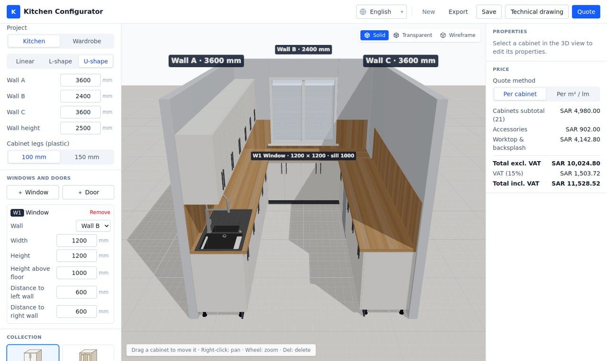
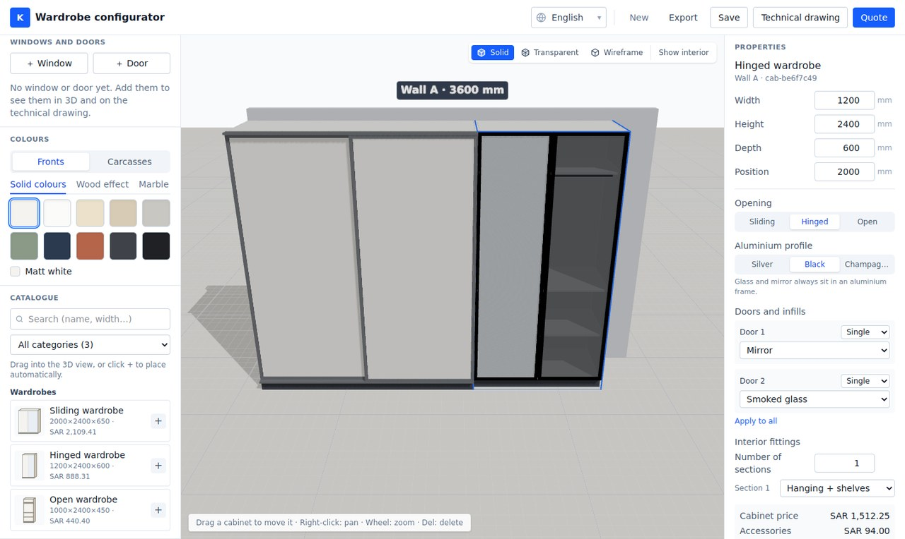
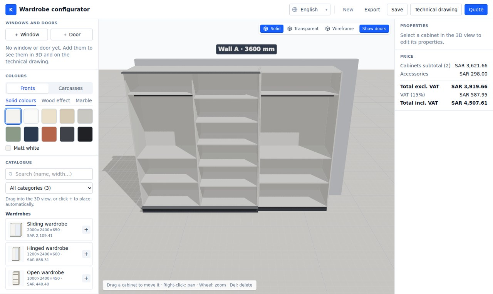
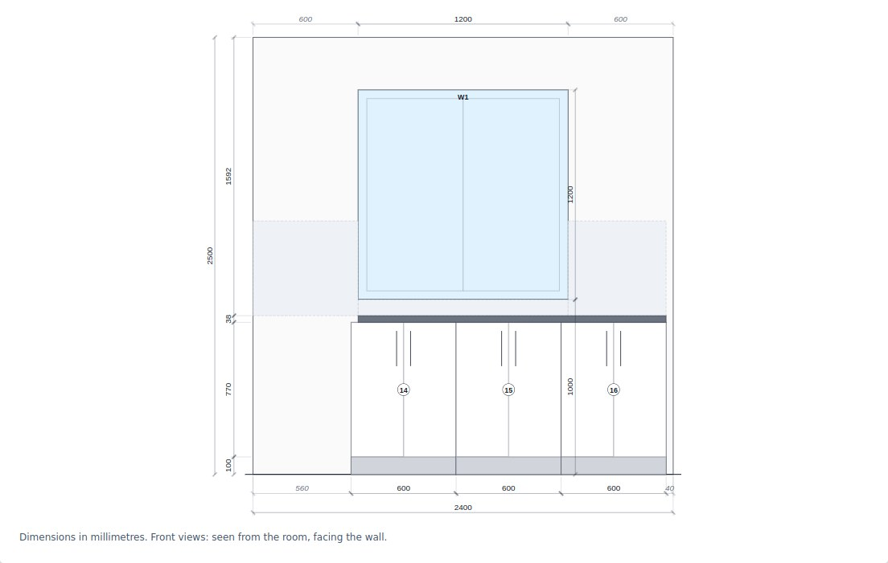
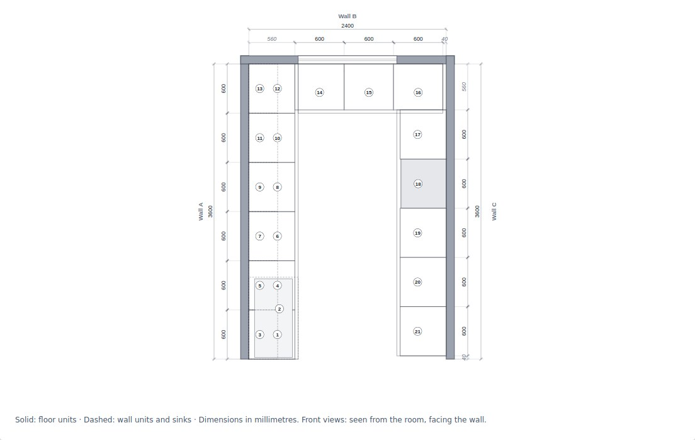
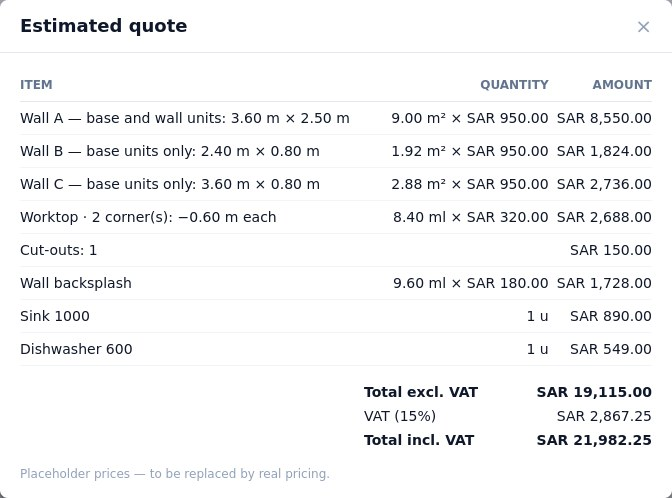

Design kitchens and wardrobes in real 3D, right inside Odoo. Your salespeople and your portal customers place the cabinets, choose the finishes, add the windows and doors — and the configurator writes the quotation lines and the technical drawing for the workshop.

Linear, L-shaped or U-shaped room with its own wall lengths and ceiling height. Cabinets snap to the walls and to each other, and never overlap.
Base units, drawer units, tall units, wall units, appliances and sinks. Four front styles (flat with bar handles, raised panel, Gola handleless, shaker), solid, wood-effect and marble finishes.
Worktop pieces generated from the base units, with corner joints and sink cut-outs. Backsplash wall by wall, stopping under window sills.
Openings cut in the walls, with their width, height, height above the floor and distances to the left and right walls.
Solid, transparent or wireframe views to show the inside of the cabinets to your customer.
Width, height and depth of each cabinet can be changed; tall units and wardrobes go up to the ceiling of the room.
Sliding wardrobes with 2 to 4 leaves, hinged or open wardrobes. Each door can be wood, clear, smoked or frosted glass, mirror, or mixed in three bands, in a silver, black or champagne aluminium frame.
Predefined interior layouts per section: long or double hanging, hanging and shelves, shelves, drawers and hanging, shoe rack. Switch to the interior view to show them without the doors.


Every project comes with a technical drawing, dimensioned in millimetres:
It is saved with the project and printed as a PDF report from Odoo.


Two quote methods, chosen per project:
One click creates or updates the quotation lines in Odoo. Lines added by hand are kept, and a confirmed order is never changed: a new quotation is created instead. Missing products are created automatically in a Kitchen category.

A Kitchen configurator button on the quotation opens the project. Every project is listed under Sales → Orders → 3D projects (kitchen & wardrobe), with its 3D design and its drawing.
Customers design their own kitchen from My kitchen & wardrobe projects in their portal and send a quote request: a draft quotation is created for their salesperson, who checks it before sending.